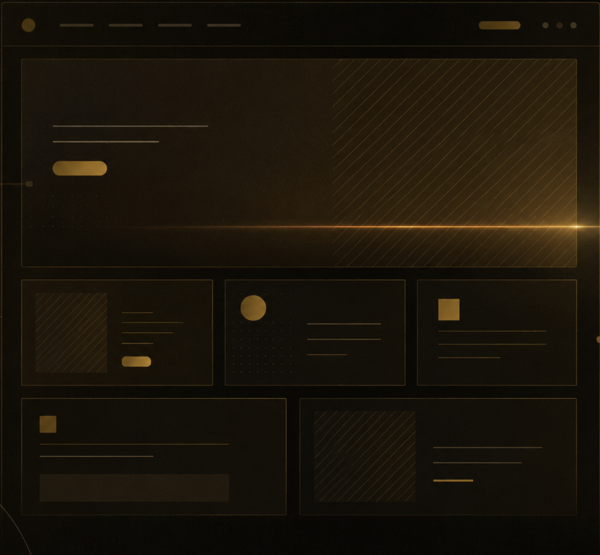
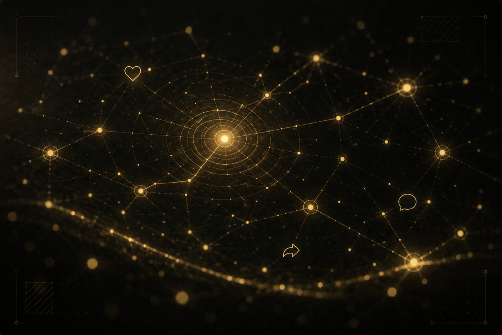
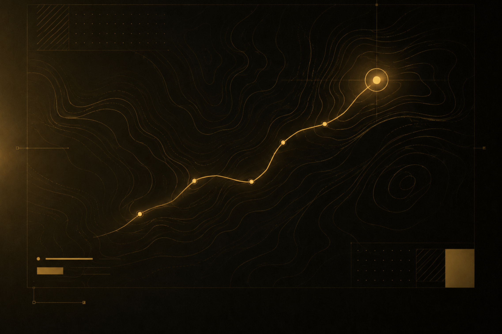

01
เว็บไซต์
เว็บการตลาด แลนดิ้งเพจ และเว็บคอร์ปอเรตประสิทธิภาพสูง — สร้างมาเพื่อการแปลงและความเร็ว
ดูรายละเอียดบริการ
ตั้งแต่แบรนด์ไปจนถึงอินเทอร์เฟซ — เราออกแบบและสร้างประสบการณ์ดิจิทัลครบวงจร ภายใต้ทีมเดียว
เว็บการตลาด แลนดิ้งเพจ และเว็บคอร์ปอเรตประสิทธิภาพสูง — สร้างมาเพื่อการแปลงและความเร็ว
ดูรายละเอียดบริการ
อัตลักษณ์แบรนด์ตั้งแต่โลโก้ถึงดีไซน์ซิสเต็ม — อัตลักษณ์ที่คงเส้นคงวาในทุกจุดสัมผัส
ดูรายละเอียดบริการ
คารูเซล อินโฟกราฟิก และหน้า link-in-bio ที่ออกแบบเอง — สร้างมาเพื่อให้ถูกแชร์
ดูรายละเอียดบริการ
การวางตำแหน่ง คอนเทนต์ และดิจิทัลสตราเทจีที่เปลี่ยนแบรนด์ให้เป็นความได้เปรียบทางธุรกิจ
ดูรายละเอียดบริการ
วิธีการทำงาน
01
เริ่มจากการฟัง — เป้าหมาย ลูกค้า และสิ่งที่ทำให้คุณแตกต่าง
02
จากนั้นเราขึ้นรูป — ลุค ฟีล และหน้าจอจริงที่คลิกได้
03
แล้วลงมือสร้างจริง — เร็ว เสถียร และต่อยอดง่าย
04
ปล่อยขึ้นจริง — และเราอยู่ซัพพอร์ตคุณต่อ